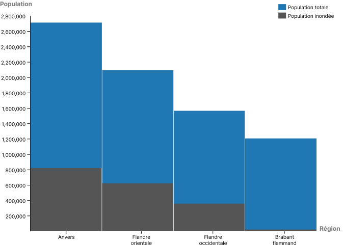
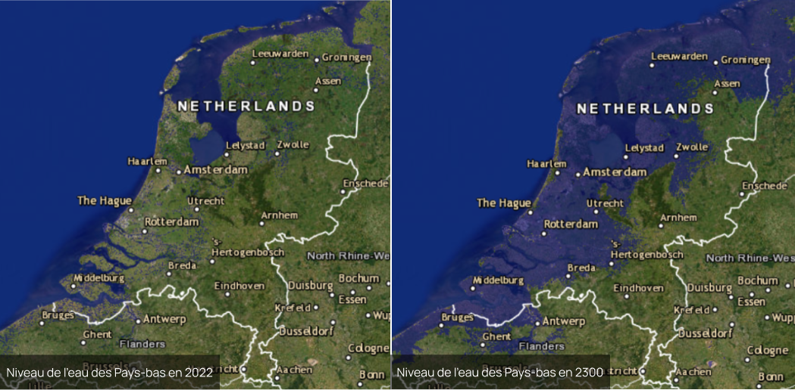

La Belgique est un pays relativement plat dû à l’inexistence de vallonnements à l’intérieur des terres, ce qui en fait son principal défaut face au réchauffement climatique et donc à la montée des eaux. La Flandre, région nord du pays, est facilement friable car elle se situe le long de la mer du Nord, qui en période de montée des eaux n’hésite pas à gagner du terrain en inondant villes et villages sur son passage.
Avec un peu plus de 11 500 000 habitants pour seulement 30 688 km², la Belgique est un territoire dense. Une montée des eaux de 5 mètres aura pour conséquence majeure le déménagement de près de 1 900 000 de personnes au niveau national, soit 1/6 de la population de la Belgique.
La Belgique est également l'un des pays les plus urbanisés d'Europe. 97% de ses 11,6 millions d'habitants vivent dans une zone urbaine. La majeure partie de ces centres urbains se situent près des côtes ou des cours d’eau. Les principaux exemples sont : Gand, ville côtière de la Flandre avec 263 614 habitants, elle est la deuxième commune la plus peuplée de Belgique et Anvers, ville portuaire belge située sur l'Escaut, avec 521 216 habitants elle est la ville la plus peuplée de Belgique. Le territoire belge est inégalement réparti entre trois régions : la Flandre, région côtière la plus densément peuplée avec 492 hab./km², la Wallonie, région rurale située dans les terres avec une densité de population plus faible de 217 hab./km² et la Région de Bruxelles-Capitale de 7.528 hab./km².
Avec la montée du niveau de la mer, la région la plus touchée sera la Flandre. Sa province la plus touchée sera la province d’Anvers avec 826 969 habitants inondés, suivie de la Flandre orientale avec 627 291 habitants inondés, puis la Flandre occidentale avec 427 251 habitants inondés et pour finir le Brabant flamand dans laquelle seulement une ville de 8859 habitants sera touchée.
En plus du changement climatique et de la hausse des précipitations que cela entraînera, 1/7 du territoire belge se retrouvera en dessous du niveau de la mer. Les populations locales se rapprocheront de plus en plus à l’intérieur des terres et la densité de population augmentera drastiquement.
Sans prendre en compte les potentielles immigrations massives des Pays-Bas, la Belgique verra sa densité augmenter de 66 habitants par km², passant de 377 à 443 habitants par km². La Belgique étant un des pays d’europe avec la plus forte densité de population, la montée des eaux pourrait être un problème primordial pour le pays dans les années à venir. La question de l’immigration des populations locales devra être prise au sérieux afin d’anticiper au maximum les conséquences de la crise climatique.
De plus, 2/3 de la superficie ainsi que la moitié de la population des Pays-Bas se verra inondée, soit 8 753 000 habitants sur 17 530 000 au total. Cela provoquera inévitablement des vagues d’immigration, principalement en Belgique car c’est un pays limitrophe qui a également la même langue officielle : le néerlandais. Nous pouvons donc en déduire que la Belgique devra faire face à une densité de population largement supérieure à la moyenne. De ce fait, de nombreuses conséquences vont faire surface. Nous pouvons parler d’une augmentation intense du risque de pauvreté et donc de délinquance ou de vandalisme, d’un manque réel de terres agricoles et donc une diminution de la souveraineté alimentaire, de l’autosuffisance etc.
Les villes touchées sont toutes localisées sur le littoral belge et donc a forciori dans la région flamande. Les bilans les plus lourds sont logiquement dans les capitales des provinces telles que Anvers, Gand et Bruges.